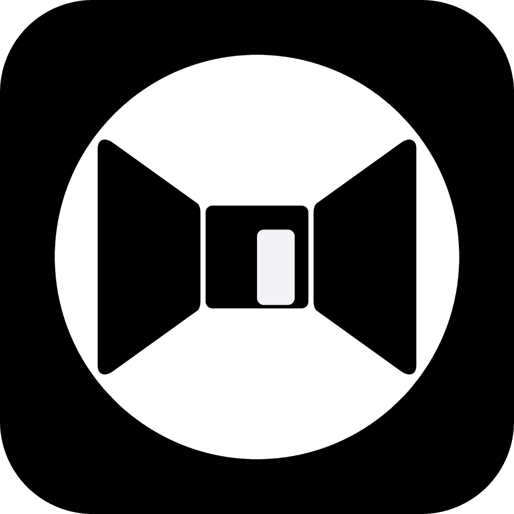

O pequeno peso mental que se acumula quando os pensamentos não têm para onde ir.
A fricção mental cotidiana não é um problema a ser resolvido. É o arrasto mental silencioso que se forma quando os pensamentos não têm onde pousar.
Não são problemas graves. Não são transtornos. Apenas o pequeno peso mental que surge quando os pensamentos ficam sem destino.
Esses momentos não exigem conserto — exigem um lugar para pousar.
Um mapa sereno do sistema MINDBEBOP.
Quando um pensamento precisa de resposta
Alguns pensamentos criam fricção porque não foram respondidos. Eles se repetem até que a mente sinta que foram resolvidos.
Nesses momentos, um pensamento pode ser invertido no MindFlipOut, reforçado através do MindShoutOut e gentilmente revisitado no MindZoneOut — até que não precise mais de atenção.
Se algo restar, seu reflexo pode retornar ao MindFlipOut, e o ciclo continua naturalmente.

Quando um pensamento precisa ser carregado
Outros pensamentos não precisam mudar. Eles permanecem ativos porque você tem medo de perdê-los.
Às vezes, um pensamento é pesado demais para carregar, mas ainda não está pronto para ser respondido. Nesses momentos, ele pode ser brevemente tocado no MindFlipOut — não para resolvê-lo, mas para reconhecer o que ele é.
A partir daí, o MindShoutOut pode carregar o peso, enquanto o MindZoneOut permite que o pensamento seja visto sem ser segurado — para que a mente descanse sem precisar soltá-lo totalmente.
| App / Fase | Filosofia Central | Quando Usar | Resultado | |
|---|---|---|---|---|
|
|
MindFlipOut Planejamento |
Dê aos pensamentos um lugar para pousar — e uma resposta. | Quando um pensamento se repete ou fica circulando na cabeça. | Clareza: O pensamento é escrito e reformulado para não gerar mais resíduo mental. |
|
|
MindShoutOut Deixar de Lado |
Confie que o pensamento retornará. | Quando um pensamento parece importante, mas é pesado demais para carregar agora. | Alívio: O pensamento é colocado fora da cabeça sem medo de ser esquecido. |
|
|
MindZoneOut Quietude |
Dê à mente uma parede de silêncio. | Quando sua cabeça precisa de menos estímulos e quietude intencional. | Assentamento: Os pensamentos suavizam ou alcançam seu próprio ponto final. |
|  | MindBackOut Fundamento |
Saia do "uniforme" mental. | Quando a pressão vem de papéis sociais, e não de um pensamento específico. | Amortecimento: A pressão dos papéis suaviza antes que os pensamentos exijam atenção. |
|
|
MindEaseOut Liberação por tempo |
Deixe ir através do tempo. | Quando um pensamento pertence ao passado ou futuro, não ao presente. | Leveza: O pensamento se solta ao deixar de ser carregado no agora. |